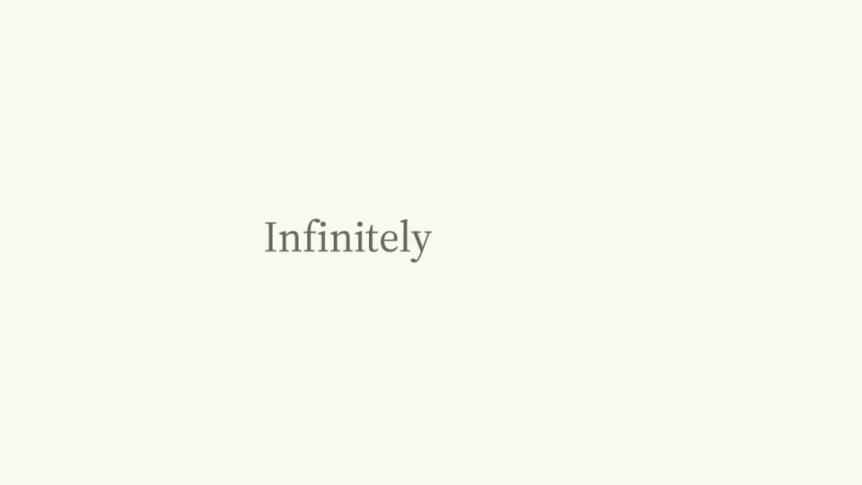
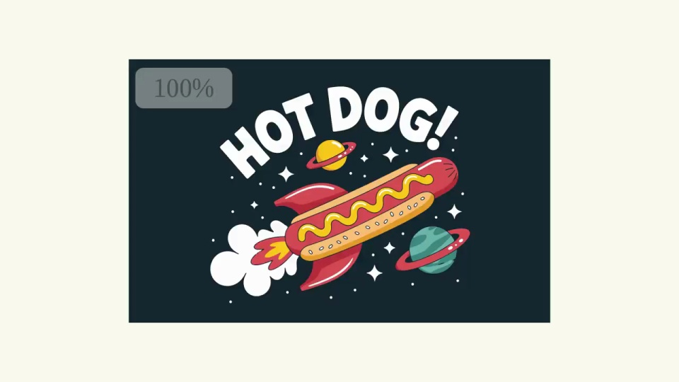
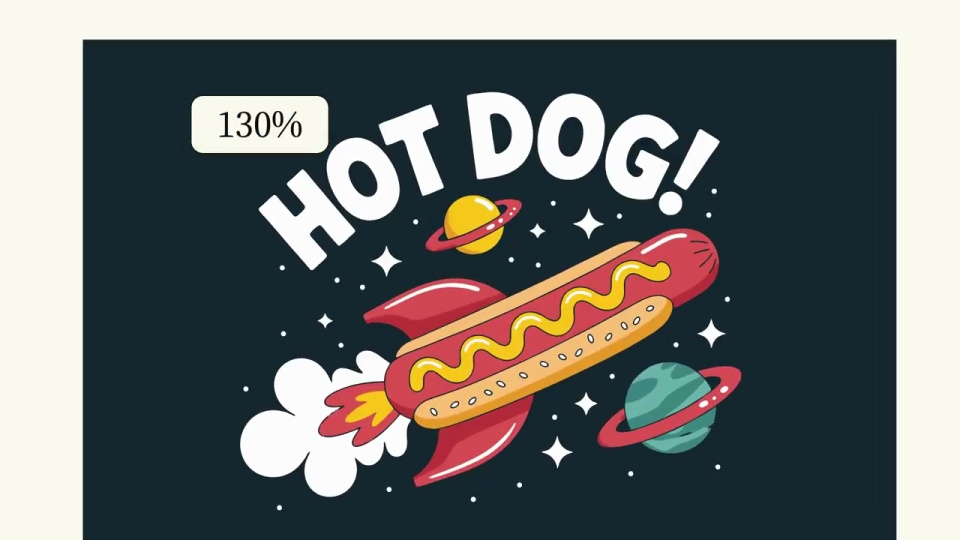
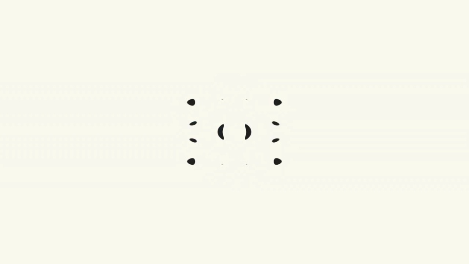

Ideogram / V130
矢量图形｜发布前预告
从完整海报推进到行星，再到黄色轮廓的一条曲线。倍率持续增加，但边缘始终平滑；放大中心保持在同一细节上。
构图与编排 可播放 · 可替换内容
整体编排规则示例
查看 HTML 源码
<!doctype html><html lang="zh-CN"><meta charset="utf-8"><meta name="viewport" content="width=device-width,initial-scale=1"><title>矢量图形｜发布前预告 · sequence</title><style>html,body{margin:0;width:100%;height:100%;overflow:hidden;background:#fbfbef}canvas{display:block;width:100%;height:100%;object-fit:contain}</style><body data-mode="sequence"><canvas width="1000" height="600"></canvas><script src="data.js"></script><script src="common.js"></script><script src="scene.js"></script><script src="bridge.js"></script></body></html>画面元素插画画布放大中心倍率标签清晰曲线品牌标志
MOTION LANGUAGE
动作与构图
局部动作 · 构图规则
01
用连续放大证明可缩放
用连续放大证明可缩放规则示例
查看 HTML 源码
<!doctype html><html lang="zh-CN"><meta charset="utf-8"><meta name="viewport" content="width=device-width,initial-scale=1"><title>矢量图形｜发布前预告 · sequence</title><style>html,body{margin:0;width:100%;height:100%;overflow:hidden;background:#fbfbef}canvas{display:block;width:100%;height:100%;object-fit:contain}</style><body data-mode="clip" data-start="1.5" data-end="4.5"><canvas width="1000" height="600"></canvas><script src="data.js"></script><script src="common.js"></script><script src="scene.js"></script><script src="bridge.js"></script></body></html>从完整海报推进到行星，再到黄色轮廓的一条曲线。倍率持续增加，但边缘始终平滑；放大中心保持在同一细节上。
02
固定倍率标签作为参照
倍率小标签留在左上，不跟随插画一起放大。开场和结尾用奶油白底与细衬线字，插画阶段可充满画面。
03
从巨大细节回到小标志
放大结束硬切回留白，让碎片在中心组合成品牌图案，再展开字标。更换插画时选择能支持数层细节的矢量主体。
SEQUENCE
段落与节奏
点击段落，定位到上方编排示意。




画面参考 · 离散静帧
KEEP THE RELATIONSHIPS
制作其他主题
- 目标插画需要真实矢量轮廓；保留连续 zoom 和固定倍率。
制作约束
插画画布 / 放大中心 / 倍率标签 / 清晰曲线 / 品牌标志
- 从完整海报推进到行星，再到黄色轮廓的一条曲线。倍率持续增加，但边缘始终平滑；放大中心保持在同一细节上。
- 倍率小标签留在左上，不跟随插画一起放大。开场和结尾用奶油白底与细衬线字，插画阶段可充满画面。
- 放大结束硬切回留白，让碎片在中心组合成品牌图案，再展开字标。更换插画时选择能支持数层细节的矢量主体。